Васил Н. Златарски
История на Първото българско Царство. I. Епоха на хуно-българското
надмощие (679—852)
ПРИТУРКИ
16. ТЪРНОВСКИЯТ ОМОРТАГОВ НАДПИС
(Към стр. 417—418)
Макар че тоя надпис бе издаден още в 1859 г. според преписа на д-р Х.
С. Даскалов [1], обаче поради това, че той не бе точно
преписан от първия му издател, някои редове в текста останаха за дълго
време
1. Вж. Открытия в древней столице болгарской
Тернов в „Чтения в Импер. общ. ист. и древ. российских при Моск. университете”
за 1859 г., кн. 2 и отделен отпечатък, стр. 15—16. — „Български книжици”
за 1859 г., стр. 410—411.
581
тъмни и породиха разни четения. [2] Нам се удаде щастлив
случай пръв да снемем естампаж от надписа и да дадем правилното му и точно
четене. [3] По-сетне Ф. Ив. Успенски издаде факсимиле
на самия текст и предложи ново разбиране на съдържанието, [4]
върху които ние искаме тук да се поспрем.
Ние четем гръцкия текст на тоя надпис в книжовен правопис така:
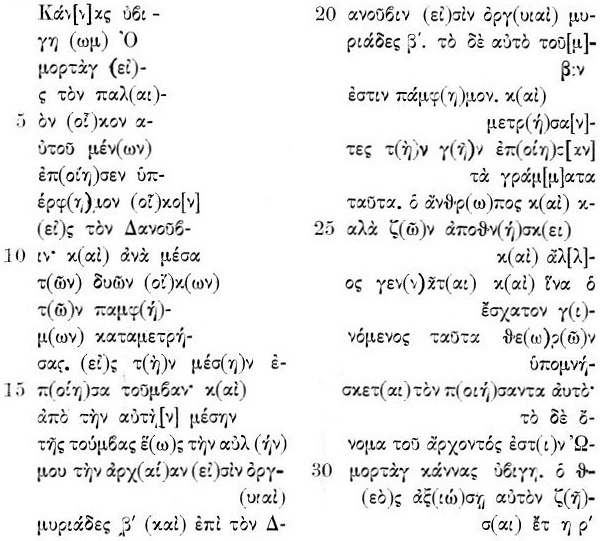
2. Л. Гильфердинг, Сочинения, I (1868),
стр. 41, бел. 2. — Иречек, История болгар, одес. издание, стр. 181—182.
— Хр. Лопарев, Две заметки и пр., пак там, стр. 341—362.
3. За историята на надписа и за разните
четения вж. В. Н. Златарски, Два известни бълг. надписа от IX в.,
в СбНУК, кн. XV, 1898, стр. 131—136.— Ср. Jireek
в Archiv f. sl. Philologie, Bd. XXI (1899), S. 611.
4. Вж. О древностях города Тырнова, в ИРАИК,
кн. VII (1901), стр. 2—6, табл. № 2а, 3 и 4.
582
т. е.
„Великият хан Омортаг, като остая в стария си дом, съгради
преславен дом при Дунав. И като измерих [разстоянието] отгоре [т. е. по
лицето на земята] между двата всеславни дома, направих в средата гробница.
И от самата среда на гробницата до моя старовремски дворец [аул] има 20
хиляди оргии и към Дунава има 20 хиляди оргии. А самият гроб [склеп] е
всеславен. И като измериха земята, поставиха тоя надпис. Човек, ако и да
живее добре, умира м друг се ражда. И нека тоя, който се роди най-сетне,
разглеждайки тоя [надпис], си спомня за оногова, който го [гроб, склеп]
построи. А името на княза, е Омортаг, велики хан. Нека бог го удостои да
преживее сто години.”
Ф. Ив. Успенски чете нашия надпис така:
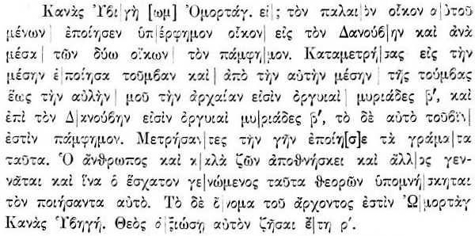
А превежда тоя надпис така: „Хан Ивиги Омортаг, оставаясь в старом дворце
своем, построил великолепннй дворец на Дунае и среди зтих двух дворцов
памфим.
Сделав измерение [пространства], в самой середине насипал холм, а от самой
середины этого холма и до старого аула моего две мириады сажен [т. е. 20
000 оргий или 40 верст] и к Дунаю две мириады сажен; а эта самая тумва
[насыпь] и есть памфим. Измерив землю, сделал зту надпись. Человек существо
смертное, хотя бы он и хорошо жил, а другой раждается [на место его], и
тот, кто родится самым последним, размишляя о сем, да вспомнит
583
сделавшего сие. Имя же княза ест Омортаг Хан Ивиги. Бог да пошлет ему
столетнюю жизнь!” [5]
Но дали това разбиране е приемливо?
На първо място ще отбележим, че Успенски според нас не съвсем правилно
чете и разбира следната фраза р. 10—15:
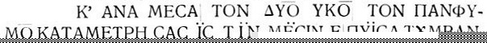
която той чете:
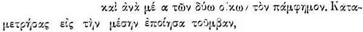
от което ясно стана, че думата 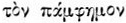
той взема за съществит. име. и я отнася като пряко допълнение към гл. 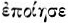
в първото изречение на текста. — Но ако да беше тя съществит. име, то:
1) не щеше да бъде поставена с член, какъвто пример имаме в р. 7—8: 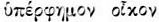,
и р. 14—15: 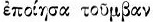
— и двете без член, като за пръв път споменавани, и 2) в р. 21—22:  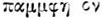
тя щеше да бъде непременно с член и при това в имен. пад.
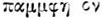
тя щеше да бъде непременно с член и при това в имен. пад.  ,
ако винит. пад. е 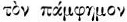,
както я разбира сам Успенски. Оттука ясно става, че в първия случай тя
като прилагателно име се отнася към предните думи 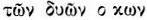
и трябва с тях да се съгласува 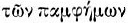,
а във втория случай тя се отнася и се съгласува с
,
ако винит. пад. е 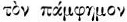,
както я разбира сам Успенски. Оттука ясно става, че в първия случай тя
като прилагателно име се отнася към предните думи 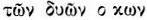
и трябва с тях да се съгласува 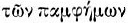,
а във втория случай тя се отнася и се съгласува с  ;
тъй че тук не става дума за някакъв, си „памфим”, а 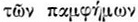
е определение към „двата дома” в първия случай и затова заедно с 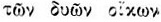
тя е подчинена на
;
тъй че тук не става дума за някакъв, си „памфим”, а 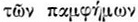
е определение към „двата дома” в първия случай и затова заедно с 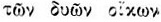
тя е подчинена на  ,
както това показва и съюзът 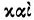
пред 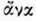,
който свързва с първото изречение второто: 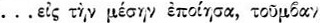
а във втория случай тя е сказуемо с 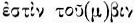[6].
Щом това се установява, то и под 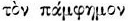
не може да се разбира „насип или тумва” [7], а е прилагателното 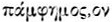,
което значи „всеславен”.
,
както това показва и съюзът 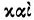
пред 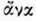,
който свързва с първото изречение второто: 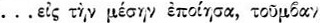
а във втория случай тя е сказуемо с 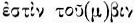[6].
Щом това се установява, то и под 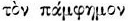
не може да се разбира „насип или тумва” [7], а е прилагателното 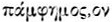,
което значи „всеславен”.
5. Успенский, каз. ст., пак там,
стр. 5.
6. Така чете това предложение и J. В.
Bury в Appendix № 10 към E. Gibbon, The history of the decline
and fall of the Roman empire, vol. VI (1898), p. 548.
7. Впрочем Успенски разбира тоя „памфим”
ту като нещо отделно,
584
Що се отнася до думата 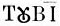
р. 21, то Успенски, за да „придаде на това странно речение 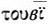
исканата форма”, пренася надредния знак за изпущането на носовия звук от 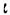
над 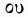 и
чете 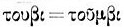.
Ho такова пренасяне според нас е произволно, защото знакът — в целия надпис
е поставен навсякъде в края на думите и означава, че е изпусната само буквата 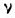;
в средата на думата той е поставен само в 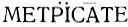,
и то защото редът свършва на 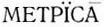.
Това може да се счита за правило, в което каменорезачът се строго придържал,
затова и пренасянето, което прави Успенски, е недопустимо. Очевидно, че
тая дума трябва да се чете 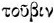
вм. 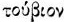 [8],
което пък стои вм. 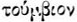;
буквата 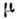
е тук случайно пропусната от каменорезача, както той е пропуснал в р. 16
бук. 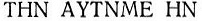.
И тъй тая дума ние срещаме в нашия надпис в две форми 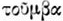
и 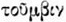 или .
Няма съмнение, че в ,
лат. tumba трябва да видим латинизирана гръцката 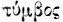
— „надгробен надпис, гроб, гробница”; но имаме и друга форма ,
която ни подсеща, че трябва да различаваме, както и самият надпис различава,
две части в това, което Омортаг е построил между двата всеславни дома (двореца),
а именно: 1)
самия „гроб” „склеп”, който бил 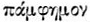,
т. е. „всеславен, великолепен”, и 2)
— самата „гробница”, постройката, в която се намирал .
Не съвсем точно според нас Успенски е превел и изречението: 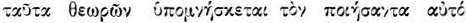.
Глаг. 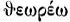
не значи „размишлявам”; 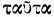
очевидно се отнася към 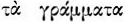,
а 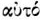 — към ,
тъй че едва ли може да се разбира това изречение тъй отвлечено, както го
превежда Успенски.
ту като едно и също с тумва. Вж. Абоба-Плиска, стр. 551:
„памфим и тумва”, “памфим или тумва”.
8. Както напр. 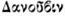
вм. 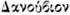 в
нашия надпис или 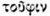
вм. 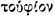 вж.
у Sophocles s. v.
[Previous]